Отделу IT в компании "РиК" была поставлена задача централизованного управления учетными данными всех рабочих станций и серверов, работающих как GNU/Linux, так и на Microsoft Windows. В компании в данный момент работает Active Directory домен и все сервера и рабочие станции с Microsoft Windows были добавлены в него. Необходимо настроить централизованную аутентификацию как клиентов, так и серверов. Для решения данной задачи со стороны GNU/Linux был выбран FreeIPA сервер. Также предполагается настроить централизованное управление правами доступа, и правилами sudo для клиентов и серверов.
По окончанию данной лабораторной работы вы сможете:
Описание тестовой среды
Предположительное время: 1 час 30 минут Виртуальные машины: ipa.example.com, cl.example.com, srv.example.com, dc.domain.com, wincl.domain.com
| Логин | Пароль |
|---|---|
| root | redhat |
| vagrant | vagrant |
| DOMAIN\vagrant | vagrant |
В данный момент в компании "РиК" не установлен FreeIPA сервер и домен. Необходимо произвести его установку и предварительную настройку.
Выполните вход в систему на виртуальной машине ipa.example.com, используя учетную запись vagrant и пароль vagrant.
Убедитесь, что в файле /etc/hosts находятся строки
127.0.0.1 localhost.localdomain localhost
172.25.0.10 ipa.example.com ipa
Если в файле уже существовали строки с текстом ipa, то замените их.
Если таких строк там нет, то добавьте их.
[vagrant@ipa ~]$ sudo sed -i /.*ipa.*/d /etc/hosts
[vagrant@ipa ~]$ sudo echo '172.25.0.10 ipa.example.com ipa' >> /etc/hosts
Настроим разрешение имен сервера ipa.example.com на localhost.
[vagrant@ipa ~]$ sudo nmcli conn modify System\ eth0 ipv4.ignore-auto-dns true
[vagrant@ipa ~]$ sudo nmcli conn up System\ eth0
[vagrant@ipa ~]$ sudo nmcli conn modify System\ eth1 ipv4.dns 127.0.0.1
[vagrant@ipa ~]$ sudo nmcli conn up System\ eth1
[vagrant@ipa ~]$ cat /etc/resolv.conf
# Generated by NetworkManager
search example.com
nameserver 127.0.0.1
Установите пакеты, необходимые для FreeIPA сервера
[vagrant@ipa ~]$ sudo yum -y install bind bind-utils bind-dyndb-ldap ipa-server ipa-server-dns
[vagrant@ipa ~]$ sudo ipa-server-install --setup-dns --ssh-trust-dns --mkhomedir --allow-zone-overlap
Ответьте на вопросы помощника так, как показано в примере
...
Server host name [idm-server.example.com]: <Enter>
...
Please confirm the domain name [example.com]: <Enter>
...
Please provide a realm name [EXAMPLE.COM]: <Enter>
... Directory Manager password: < "password" >
Password (confirm): < "password" >
...
IPA admin password: < "password" >
Password (confirm): < "password" >
...
Do you want to configure DNS forwarders? [yes]: Yes
...
Enter IP address for a DNS forwarder: <Enter>
...
Do you want to configure the reverse zone? [yes]: Yes
...
Continue to configure the system with these values? [no]: Yes
...
Domain name: example.com
В конце мастера должны получить примерно такое сообщение
The IPA Master Server will be configured with:
Hostname: ipa.example.com
IP address(es): 172.25.0.10
Domain name: example.com
Realm name: EXAMPLE.COM
BIND DNS server will be configured to serve IPA domain with:
Forwarders: No forwarders
Forward policy: only
Reverse zone(s): 0.25.172.in-addr.arpa.
Continue to configure the system with these values? [no]: Yes
...
...
The ipa-client-install command was successful
==============================================================================
Setup complete
Next steps:
1. You must make sure these network ports are open:
TCP Ports:
* 80, 443: HTTP/HTTPS
* 389, 636: LDAP/LDAPS
* 88, 464: kerberos
* 53: bind
UDP Ports:
* 88, 464: kerberos
* 53: bind
* 123: ntp
2. You can now obtain a kerberos ticket using the command: 'kinit admin'
This ticket will allow you to use the IPA tools (e.g., ipa user-add)
and the web user interface.
Be sure to back up the CA certificates stored in /root/cacert.p12
These files are required to create replicas. The password for these
files is the Directory Manager password
[vagrant@ipa ~]$
Вместе с FreeIPA сервером установились некоторые дополнительные службы, такие как 389 Directory Server, MIT Kerberos Server, ISC BIND 9,HTTP Apache Server, и т.д. Проверим утилитой ipactl, что их службы запущены и работают. С помощью утилиты ipactl вы можете управлять всеми службами сервера, что имеют отношение к работе FreeIPA.
[vagrant@ipa ~]$ sudo ipactl status
Directory Service: RUNNING
krb5kdc Service: RUNNING
kadmin Service: RUNNING
named Service: RUNNING
httpd Service: RUNNING
ipa-custodia Service: RUNNING
ntpd Service: RUNNING
pki-tomcatd Service: RUNNING
ipa-otpd Service: RUNNING
ipa-dnskeysyncd Service: RUNNING
ipa: INFO: The ipactl command was successful
Проверим, что DNS PTR записи в обратной зоне dns 0.25.172.in-addr.apra будут создаваться/обновляться при присоединении компьютеров.
[vagrant@ipa ~]$ ipa dnszone-mod example.com --allow-sync-ptr=true
Zone name: example.com.
Active zone: TRUE
Authoritative nameserver: ipa.example.com.
Administrator e-mail address: hostmaster.example.com.
SOA serial: 1536572066
SOA refresh: 3600
SOA retry: 900
SOA expire: 1209600
SOA minimum: 3600
Allow query: any;
Allow transfer: none;
Allow PTR sync: TRUE
Копия всех сообщений пишется в файл журнала /var/log/ipaserver-install.log.
Откроем необходимые порты для FreeIPA сервера в firewalld
[vagrant@ipa ~]$ sudo firewall-cmd --add-service=http --permanent
[vagrant@ipa ~]$ sudo firewall-cmd --add-service=https --permanent
[vagrant@ipa ~]$ sudo firewall-cmd --add-service=freeipa-ldap --permanent
[vagrant@ipa ~]$ sudo firewall-cmd --add-service=freeipa-ldaps --permanent
[vagrant@ipa ~]$ sudo firewall-cmd --add-service=freeipa-replication --permanent
[vagrant@ipa ~]$ sudo firewall-cmd --add-service=freeipa-trust --permanent
[vagrant@ipa ~]$ sudo firewall-cmd --add-service=kerberos --permanent
[vagrant@ipa ~]$ sudo firewall-cmd --add-service=dns --permanent
[vagrant@ipa ~]$ sudo firewall-cmd --add-service=ntp --permanent
[vagrant@ipa ~]$ sudo firewall-cmd --reload
Проделайте действия на: cl.example.com
Зайдите интерактивно в среду рабочего стола "Gnome Enviroment"с логином vagrant и паролем vagrant.
Ответьте по умолчанию на вопросы мастера начальной настройки "Gnome Enviroment".
Настройте разрешение имен dns через ipa сервер ipa.example.com
Запустите "Gnome Terminal" и дайте команды
[vagrant@cl ~]$ sudo nmcli conn modify System\ eth0 ipv4.ignore-auto-dns true
[vagrant@cl ~]$ sudo nmcli conn up System\ eth0
[vagrant@cl ~]$ sudo nmcli conn modify System\ eth1 ipv4.dns 172.25.0.10
[vagrant@cl ~]$ sudo nmcli conn up System\ eth1
Убедитесь, что файл /etc/resolv.conf теперь содержит такие строки.
[vagrant@ipa ~]$ cat /etc/resolv.conf
# Generated by NetworkManager
search example.com
nameserver 172.25.0.10
Проверим, что имя сервера ipa.example.com теперь разрешается со стороны клиента.
[vagrant@cl ~]$ nslookup ipa.example.com
Server: 172.25.0.10
Address: 172.25.0.10#54
Name: ipa.example.com
Address: 172.25.0.10
Запустите Firefox Web Browser и откройте https://ipa.example.com. В окне "Your Connection is not secure" нажмите Advanced --> Add Exception... --> Confirm Security Exception. В форме доступа введите ранее указанный в мастере настройки логин администратора FreeIPA домена admin и его пароль password.
Должно появиться такое окно.
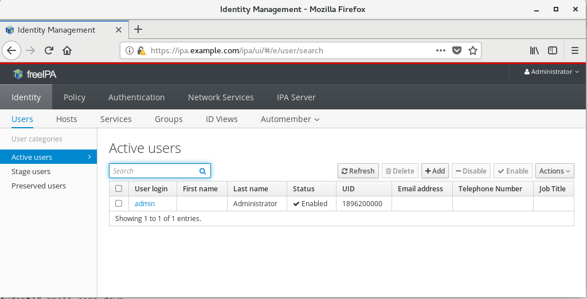
Веб-интерфейс FreeIPA сервера мультиязычен. Русский язык в веб-интерфейса можно отобразить, если в настройках браузера в списке предпочитаемых языков для запрашиваемых страниц добавить первым "Русский язык"
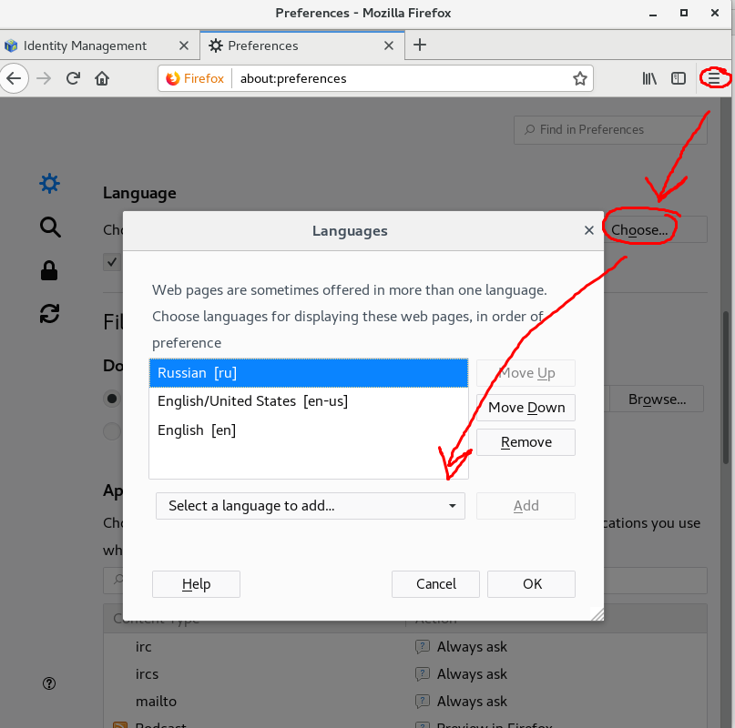
Пока мы только проверили возможность открыть веб-интерфейс. Ничего делать внутри пока нет необходимости.
Проделайте действия на : ipa.example.com
[vagrant@ipa ~]$ kinit admin
Password for admin@EXAMPLE.COM:
[vagrant@ipa ~]$ klist
Ticket cache: KEYRING:persistent:1000:1000
Default principal: admin@EXAMPLE.COM
Valid starting Expires Service principal
09/06/2018 04:46:51 09/07/2018 04:46:48 krbtgt/EXAMPLE.COM@EXAMPLE.COM
[vagrant@ipa ~]$ ipa dnszone-find
Zone name: 0.25.172.in-addr.arpa.
Active zone: TRUE
Authoritative nameserver: ipa.example.com.
Administrator e-mail address: hostmaster.example.com.
SOA serial: 1536149776
SOA refresh: 3600
SOA retry: 900
SOA expire: 1209600
SOA minimum: 3600
Allow query: any;
Allow transfer: none;
Zone name: example.com.
Active zone: TRUE
Authoritative nameserver: ipa.example.com.
Administrator e-mail address: hostmaster.example.com.
SOA serial: 1536149809
SOA refresh: 3600
SOA retry: 900
SOA expire: 1209600
SOA minimum: 3600
Allow query: any;
Allow transfer: none;
----------------------------
Number of entries returned 2
----------------------------
[vagrant@ipa ~]$ ipa dnsrecord-find example.com --name=ipa --all
dn: idnsname=ipa,idnsname=example.com.,cn=dns,dc=example,dc=com
Record name: ipa
Time to live: 1200
A record: 172.25.0.10
SSHFP record: 1 1 B4A11E2F2AFB8EF4F3ACF513C199B051EA5AB7A4, 1 2
C80E2D1676FDF8D544370566D2EE20BD6D41F7434314D6C668019A0D 65AAD7A8, 3 1
20522BE298E2ED30EA8C3330AD8B3C5714889F3D, 3 2 58E31BACE0277621DE153B24A82E3FB5C5A715DFBC0E55F1D94F4D90
73BD2B4E, 4 1 7A0D4855C74C0BE213E8968D0CE5ADEE6ED5C063, 4 2
F34432C411D5DDEB0325AFC2C1C7032D36D87330982B96484EF0313B 7DC58B29
objectclass: top, idnsrecord
----------------------------
Number of entries returned 1
----------------------------
[vagrant@ipa ~]$ ipa config-show
Maximum username length: 32
Home directory base: /home
Default shell: /bin/sh
Default users group: ipausers
Default e-mail domain: example.com
Search time limit: 2
Search size limit: 100
User search fields: uid,givenname,sn,telephonenumber,ou,title
Group search fields: cn,description
Enable migration mode: FALSE
Certificate Subject base: O=EXAMPLE.COM
Password Expiration Notification (days): 4
Password plugin features: AllowNThash, KDC:Disable Last Success
SELinux user map order: guest_u:s0$xguest_u:s0$user_u:s0$staff_u:s0-s0:c0.c1023$unconfined_u:s0-s0:c0.c1023
Default SELinux user: unconfined_u:s0-s0:c0.c1023
Default PAC types: MS-PAC, nfs:NONE
IPA masters: ipa.example.com
IPA CA servers: ipa.example.com
IPA NTP servers: ipa.example.com
IPA CA renewal master: ipa.example.com
IPA master capable of PKINIT: ipa.example.com
Изменим командную оболочку по умолчанию с /bin/sh на привычную в GNU/Linux /bin/bash.
[vagrant@ipa ~]$ ipa config-mod --defaultshell=/bin/bash
...
Default shell: /bin/bash
...
/var/log/pki-ca/debug
/var/log/pki-ca-install.log #Журнал установки Центра Сертификации DogTag CA
/var/log/dirsrv/ #Каталог журналов, куда попадают сообщения службы каталога
/var/log/messages
FreeIPA домен создан. Теперь нужно завести в нём пользователей и задать им политики паролей. Настроить двухфакторную аутентификацию.
Создадим пользователей внутри FreeIPA домена с помощью инструментов командной строки.
[vagrant@ipa ~]$ ipa user-add
First name: Ivan
Last name: Petrov
User login [ipetrov]:
--------------------
Added user "ipetrov"
--------------------
User login: ipetrov
First name: Ivan
Last name: Petrov
Full name: Ivan Petrov
Display name: Ivan Petrov
Initials: IP
Home directory: /home/ipetrov
GECOS: Ivan Petrov
Login shell: /bin/bash
Principal name: ipetrov@EXAMPLE.COM
Principal alias: ipetrov@EXAMPLE.COM
Email address: ipetrov@example.com
UID: 1896200004
GID: 1896200004
Password: False
Member of groups: ipausers
Kerberos keys available: False
[vagrant@ipa ~]$ ipa user-add --first=Pavel --last=Popov ppv
----------------
Added user "ppv"
----------------
User login: ppv
First name: Pavel
Last name: Popov
Full name: Pavel Popov
Display name: Pavel Popov
Initials: PP
Home directory: /home/ppv
GECOS: Pavel Popov
Login shell: /bin/bash
Principal name: ppv@EXAMPLE.COM
Principal alias: ppv@EXAMPLE.COM
Email address: ppv@example.com
UID: 1896200007
GID: 1896200007
Password: False
Member of groups: ipausers
Kerberos keys available: False
[vagrant@ipa ~]$ ipa user-add --first=Larisa \
--last=Vasileva \
--manager=ppopov \
--email=lvas@example.com \
--homedir=/home/lvas lvas
-----------------
Added user "lvas"
-----------------
User login: lvas
First name: Larisa
Last name: Vasileva
Full name: Larisa Vasileva
Display name: Larisa Vasileva
Initials: LV
Home directory: /home/lvas
GECOS: Larisa Vasileva
Login shell: /bin/bash
Principal name: lvas@EXAMPLE.COM
Principal alias: lvas@EXAMPLE.COM
Email address: lvas@example.com
UID: 1896200006
GID: 1896200006
Manager: ppopov
Password: False
Member of groups: ipausers
Kerberos keys available: False
Изменим параметры пользователей через командную строку.
[vagrant@ipa ~]$ ipa user-show ppv
User login: ppv
First name: Pavel
Last name: Popov
Home directory: /home/ppv
Login shell: /bin/bash
Principal name: ppv@EXAMPLE.COM
Principal alias: ppv@EXAMPLE.COM
Email address: ppv@example.com
UID: 1896200007
GID: 1896200007
Account disabled: False
Password: False
Member of groups: ipausers
Kerberos keys available: False
[vagrant@ipa ~]$ ipa user-mod ppv --addattr=l="Moscow"
-------------------
Modified user "ppv"
-------------------
User login: ppv
First name: Pavel
Last name: Popov
Home directory: /home/ppv
Login shell: /bin/bash
Principal name: ppv@EXAMPLE.COM
Principal alias: ppv@EXAMPLE.COM
Email address: ppv@example.com
UID: 1896200007
GID: 1896200007
City: Moscow
Account disabled: False
Password: False
Member of groups: ipausers
Kerberos keys available: False
[vagrant@ipa ~]$ ipa user-mod ppv --addattr=title="Manager"
-------------------
Modified user "ppv"
-------------------
User login: ppv
First name: Pavel
Last name: Popov
Home directory: /home/ppv
Login shell: /bin/bash
Principal name: ppv@EXAMPLE.COM
Principal alias: ppv@EXAMPLE.COM
Email address: ppv@example.com
UID: 1896200007
GID: 1896200007
Job Title: Manager
Account disabled: False
Password: False
Member of groups: ipausers
Kerberos keys available: False
Установим пользователям пароль для первоначального входа.
[vagrant@ipa ~]$ ipa user-mod ppv --password
Password: <Введите `initialpass`>
Enter Password again to verify: <Введите `initialpass`>
-------------------
Modified user "ppv"
-------------------
User login: ppv
First name: Pavel
Last name: Popov
Home directory: /home/ppv
Login shell: /bin/bash
Principal name: ppv@EXAMPLE.COM
Principal alias: ppv@EXAMPLE.COM
Email address: ppv@example.com
UID: 1896200007
GID: 1896200007
Job Title: Manager
Account disabled: False
Password: True
Member of groups: ipausers
Kerberos keys available: True
[vagrant@ipa ~]$
[vagrant@ipa ~]$ ipa user-mod lvas --password
...
[vagrant@ipa ~]$ ipa user-mod ipetrov --password
...
Убедимся, что доменные пользователи были созданы.
[vagrant@ipa ~]$ id ppv
uid=1896200007(ppv) gid=1896200007(ppv) groups=1896200007(ppv)
[vagrant@ipa ~]$ id lvas
uid=1896200006(lvas) gid=1896200006(lvas) groups=1896200006(lvas)
[vagrant@ipa ~]$ id ipetrov
uid=1896200004(ipetrov) gid=1896200004(ipetrov) groups=1896200004(ipetrov)
[vagrant@ipa ~]$ getent passwd ppv
ppv:*:1896200007:1896200007:Pavel Popov:/home/ppv:/bin/bash
[vagrant@ipa ~]$ getent passwd lvas
lvas:*:1896200006:1896200006:Larisa Vasileva:/home/lvas:/bin/bash
[vagrant@ipa ~]$ getent passwd ipetrov
ipetrov:*:1896200004:1896200004:Ivan Petrov:/home/ipetrov:/bin/bash
Частные пользовательские группы также были созданы.
[vagrant@ipa ~]$ getent group ipetrov
ipetrov:*:1896200004:
[vagrant@ipa ~]$ getent group ppv
ppv:*:1896200007:
[vagrant@ipa ~]$ getent group lvas
lvas:*:1896200006:
[vagrant@ipa ~]$ getent group ipetrov
ipetrov:*:1896200004:**
Проверим свойства пользователей через веб-консоль администратора.
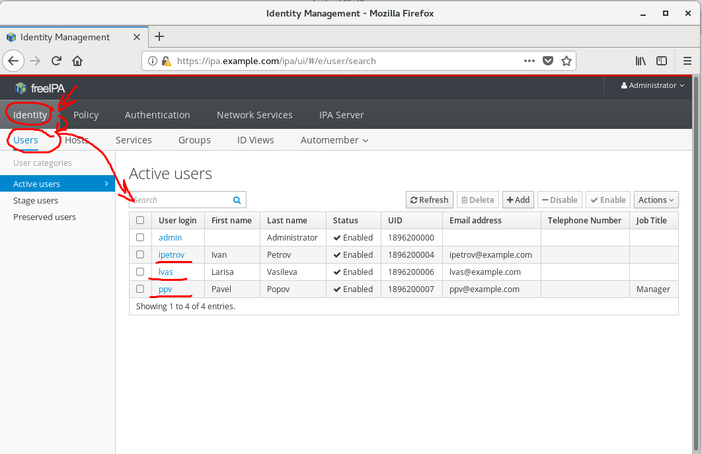
Редактировать параметры пользователя можно, если кликнуть курсором мыши по имени пользователя.
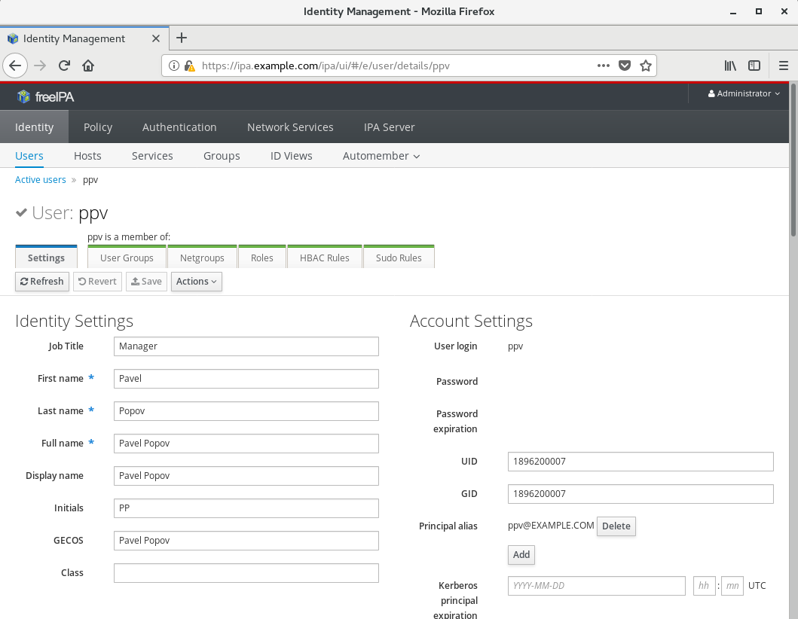
Для начала посмотрим справку о парольных политиках, запустив команду
[vagrant@ipa ~]$ ipa help pwpolicy
Password policy
A password policy sets limitations on IPA passwords, including maximum
lifetime, minimum lifetime, the number of passwords to save in
history, the number of character classes required (for stronger passwords)
and the minimum password length.
By default there is a single, global policy for all users. You can also
create a password policy to apply to a group. Each user is only subject
to one password policy, either the group policy or the global policy. A
group policy stands alone; it is not a super-set of the global policy plus
custom settings.
Each group password policy requires a unique priority setting. If a user
is in multiple groups that have password policies, this priority determines
which password policy is applied. A lower value indicates a higher priority
policy.
Group password policies are automatically removed when the groups they
are associated with are removed.
EXAMPLES:
Modify the global policy:
ipa pwpolicy-mod --minlength=10
Add a new group password policy:
ipa pwpolicy-add --maxlife=90 --minlife=1 --history=10 --minclasses=3 --minlength=8 --priority=10 localadmins
Display the global password policy:
ipa pwpolicy-show
Display a group password policy:
ipa pwpolicy-show localadmins
Display the policy that would be applied to a given user:
ipa pwpolicy-show --user=tuser1
Modify a group password policy:
ipa pwpolicy-mod --minclasses=2 localadmins
Topic commands:
pwpolicy-add Add a new group password policy.
pwpolicy-del Delete a group password policy.
pwpolicy-find Search for group password policies.
pwpolicy-mod Modify a group password policy.
pwpolicy-show Display information about password policy.
To get command help, use:
ipa <command> --help
[vagrant@ipa ~]$
Посмотрим текущие настройки политик по умолчанию
[vagrant@ipa ~]$ ipa pwpolicy-show
Group: global_policy
Max lifetime (days): 90
Min lifetime (hours): 1
History size: 0
Character classes: 0
Min length: 8
Max failures: 6
Failure reset interval: 60
Lockout duration: 600
Изменим настройки глобальной политики, действующей по умолчанию на всех пользователей.
[vagrant@ipa ~]$ ipa pwpolicy-mod --maxlife=30 --minlength=4 --maxfail=3
Group: global_policy
Max lifetime (days): 30
Min lifetime (hours): 1
History size: 0
Character classes: 0
Min length: 4
Max failures: 3
Failure reset interval: 60
Lockout duration: 600
Справку по синтаксису подкоманды ipa pwpolicy-mod можно получить, есть вставить help между ipa и pwpolicy-mod или добавить параметр --help. Вот так
[vagrant@ipa ~]$ ipa help pwpolicy-mod
...
[vagrant@ipa ~]$ ipa pwpolicy-mod --help
...
Этот принцип получения встроенной справки работает и с другими подкомандами внутри ipa.
Попробуем зайти в систему под заведенным пользователем с помощью подключения к OpenSSH серверу. Система утверждает, что у пользователя устарел пароль и сразу при входе просит его изменить. --Почему это так? Какой командой можно это узнать?--
[vagrant@ipa ~]$ ssh ppv@localhost
Password: <Введите `password`>
Password expired. Change your password now.
Current Password: <Введите `password`>
New password: <Введите `password1`>
Retype new password: <Введите `password1`>
Creating home directory for ppv.
[ppv@ipa ~]$ id
uid=1896200007(ppv) gid=1896200007(ppv) groups=1896200007(ppv) context=unconfined_u:unconfined_r:unconfined_t:s0-s0:c0.c1023
[ppv@ipa ~]$
Попробуем сразу сменить пароль пользователя на другой.
[ppv@ipa ~]$ ipa passwd
Current Password: <Введите `password1`>
New Password: <Введите `password2`>
Enter New Password again to verify: <Введите `password2`>
ipa: ERROR: Constraint violation: Too soon to change password
Почему у пользователя не получилось сразу сменить пароль на другой? На пользователя действует парольная политика по умолчанию. В ней указан минимальный срок жизни заданного пароля. Пользователь сможет повторить смену пароля только спустя 1 час после ранне произведенной успешной попытки.
[vagrant@ipa ~]$ ipa pwpolicy-show --all
...
Min lifetime (hours): 1
...
Теперь изменим парольную политику, задав её из под админа.
[vagrant@ipa ~]$ ipa pwpolicy-mod --minlife=0
...
Min lifetime (hours): 0
...
Попробуем ещё раз сменить пароль, зайдя под пользователем
[vagrant@ipa ~]$ ssh ppv@localhost
Password: <Введите `password1`>
[ppv@ipa ~]$ ipa passwd
Current Password:
New Password:
Enter New Password again to verify:
--------------------------------------
Changed password for "ppv@EXAMPLE.COM"
--------------------------------------
Как вы видите, теперь пользователи могут менять свои пароли без ограничений по времени. Теперь им не нужно ждать 1 час после смены пароля, чтобы его изменить опять.
Изменять свойства глобальной парольной политики можно также через веб-интерфейс.
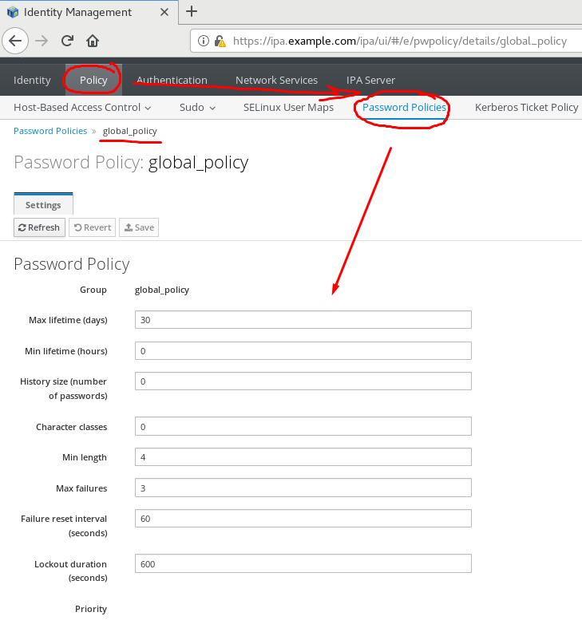
В компании требуется настроить двухфакторную аутентификацию для учетных записей системных администраторов и менеджеров. Двухфакторная аутентификация представляет собой технологию, обеспечивающую идентификацию пользователей с помощью комбинации двух различных компонентов. У пользователя в ходе проверки можно спросить не только его постоянный пользовательский пароль, но и его одноразовый пароль. Одноразовый пароль может быть выслан или сгенерирован с помощью приложения, установленного на мобильный телефон.
В ходе этой практики мы будем использовать свободное и бесплатное мобильное приложение FreeOTP, в ходе практики вам потребуется установить приложение FreeOTP Authentificator из Apple AppStore, либо FreeOTP Authentificator из Google Play на смартфон из вашего родного магазина приложений. FreeOTP использует свободные технологии и открытые протоколы HMAC-Based One-Time Password Algorithm и Time-Based One-Time Password Algorithm это значит, что вы можете использовать и другие программах многофакторной аутентификации, где реализованы эти протоколы. Например такие как Google Authentificator и Microsoft Authentificator и другие.
Сводную таблицу о возможностях приложений для аутентификации можно найти по адресу https://en.wikipedia.org/wiki/Comparison_of_authentication_solutions
Выполнение этой практики не обязательно. Если вы не будете делать эту практику, это никак не повлияет на успешность дальнейших практик.
Сначала мы разрешим однофакторную (парольную) и двухфакторную (парольную + OTP) типы аутентификации по умолчанию для всех пользователей с помощью веб-интерфейса. Допустимые типы аутентификации можно также задать при редактировании свойств пользователя, и на уровне групп пользователей.
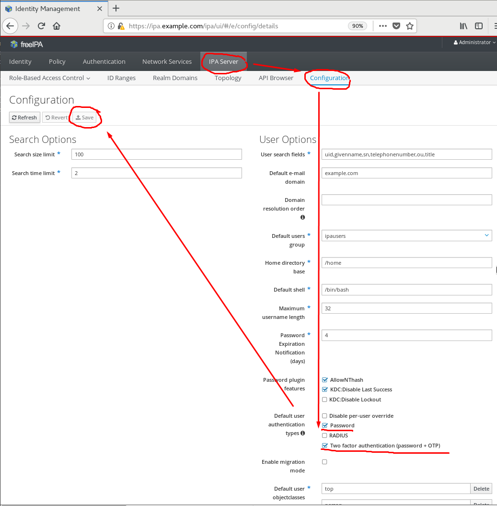
FreeOTP AuthentificatorТеперь нужно сгенерировать OTP Token и привязать его к мобильному приложению пользователя с помощью QR кода.
Нужно выйти из веб-интерфейса администратора и снова зайти, но уже под обычным пользователем.
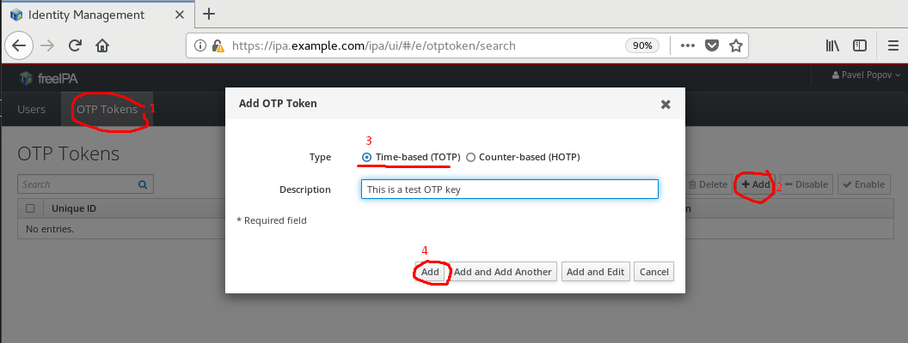
Запустим приложение FreeOTP на смартфоне и с помощью фотокамеры смартфона сфотографируем QR код прямо с монитора.
Не забудьте нажать кнопку OK в окне веб-интерфейса, чтобы добавить токен в систему.
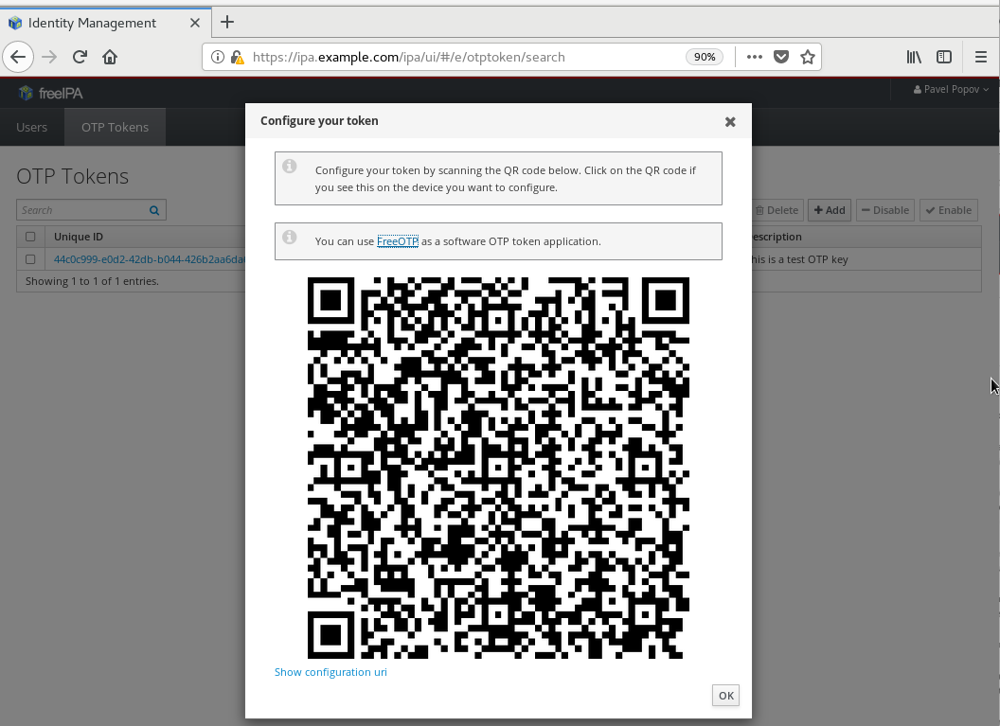 Внимание! Не надо фотографировать приведенный для примера QR код со снимка экрана. Добавляйте только тот, что вы только что сгенерировали в веб-интерфейсе.
Окно мобильного приложения FreeOTP Authentificator будет выглядеть примерно вот так.
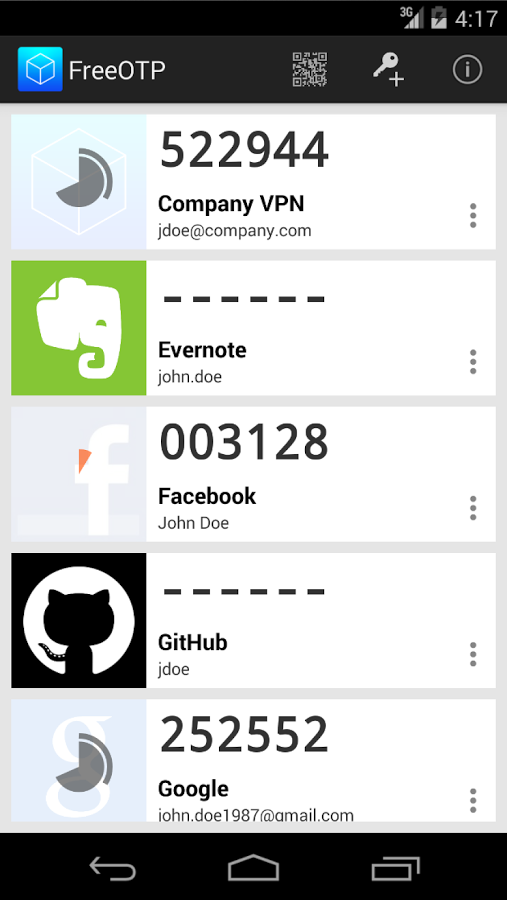
Теперь пользователю для входа нужно будет указать либо только пароль, либо пароль и одноразовый код из приложения.
Попробуем зайти под IPA пользователем с помощью OpenSSH сервера
[vagrant@ipa ~]$ ssh ppv@localhost
First Factor: <введите пароль>
Second Factor (optional): <Введите OTP пароль со смартфона>
Last login: Thu Sep 6 18:46:01 2018 from ::1
[ppv@ipa ~]$ id
uid=1896200007(ppv) gid=1896200007(ppv) groups=1896200007(ppv) context=unconfined_u:unconfined_r:unconfined_t:s0-s0:c0.c1023
[ppv@ipa ~]$
С помощью OTP пин кода можно также зайти на веб-интерфейс администратора IPA сервера.
 В нашем примере разрешены проверки при входе с помощью только пароля, а также с помощью "
В нашем примере разрешены проверки при входе с помощью только пароля, а также с помощью "пароль+ OTP пин код". Например, если пароль равен password, а OTP пин код в данный момент равен 543234, то войти можно, указав в поле пароля как password, так и password543234.
Вопрос: Где и какими инструментаами можно изменить допустимые типы аутентификации для пользователя?
Подключим к домену сервер srv.example.com и рабочую станцию cl.example.com. На сервере настроим Samba и NFS сервера со входом по Kerberos. Зайдём на рабочую станцию под IPA пользоватекем и проверим доступ.
Выполните вход в систему на виртуальной машине srv.example.com, используя учетную запись vagrant и пароль vagrant.
| Машина | Протокол, доступ и имя пользователя | Пароль | IP адрес |
|---|---|---|---|
srv.example.com |
ssh vagrant@srv.example.com |
vagrant | 172.25.0.11 |
ipa.example.com |
ssh vagrant@ipa.example.com |
vagrant | 172.25.0.10 |
Перед подключением машин к FreeIPA домену проверим, правильно ли разрешаются имена DNS домена example.com.
Проделайте действия на: srv.example.com
Зайдите интерактивно в среду рабочего стола "Gnome Enviroment"с логином vagrant и паролем vagrant.
Ответьте по умолчанию на вопросы мастера начальной настройки "Gnome Enviroment".
Настройте разрешение имен dns через ipa сервер ipa.example.com
Запустите "Gnome Terminal" и дайте команды
[vagrant@srv ~]$ sudo nmcli conn modify System\ eth0 ipv4.ignore-auto-dns true
[vagrant@srv ~]$ sudo nmcli conn up System\ eth0
[vagrant@srv ~]$ sudo nmcli conn modify System\ eth1 ipv4.dns 172.25.0.10
[vagrant@srv ~]$ sudo ifdown eth1; sudo ifup eth1
Убедитесь, что файл /etc/resolv.conf теперь содержит такие строки.
[vagrant@srv ~]$ cat /etc/resolv.conf
# Generated by NetworkManager
search example.com
nameserver 172.25.0.10
Проверим, что имя сервера ipa.example.com теперь разрешается со стороны клиента.
[vagrant@srv ~]$ getent hosts ipa.example.com
172.25.0.10 ipa.example.com
Поставим необходимые пакеты, для подключения в FreeIPA домену.
[vagrant@srv ~]$ sudo yum install -y ipa-client realmd
Утилитой realm из пакета realmd проверим , что FreeIPA сервер ipa.example.com доступен для подключения.
[vagrant@srv ~]$ realm discover -v example.com
* Resolving: _ldap._tcp.example.com
* Performing LDAP DSE lookup on: 172.25.0.10
* Successfully discovered: example.com
example.com
type: kerberos
realm-name: EXAMPLE.COM
domain-name: example.com
configured: no
server-software: ipa
client-software: sssd
required-package: ipa-client
required-package: oddjob
required-package: oddjob-mkhomedir
required-package: sssd
Присоединим компьютер к FreeIPA домену
[vagrant@srv ~]$ sudo ipa-client-install --mkhomedir \
--enable-dns-updates \
--ssh-trust-dns \
--server=ipa.example.com \
--domain=example.com \
-p admin -w password \
--fixed-primary -U \
--force-ntpd
Client hostname: srv.example.com
Realm: EXAMPLE.COM
DNS Domain: example.com
IPA Server: ipa.example.com
BaseDN: dc=example,dc=com
Synchronizing time with KDC...
Attempting to sync time using ntpd. Will timeout after 15 seconds
Successfully retrieved CA cert
Subject: CN=Certificate Authority,O=EXAMPLE.COM
Issuer: CN=Certificate Authority,O=EXAMPLE.COM
Valid From: 2018-09-05 12:10:24
Valid Until: 2038-09-05 12:10:24
Enrolled in IPA realm EXAMPLE.COM
Created /etc/ipa/default.conf
New SSSD config will be created
Configured sudoers in /etc/nsswitch.conf
Configured /etc/sssd/sssd.conf
Configured /etc/krb5.conf for IPA realm EXAMPLE.COM
trying https://ipa.example.com/ipa/json
[try 1]: Forwarding 'schema' to json server 'https://ipa.example.com/ipa/json'
trying https://ipa.example.com/ipa/session/json
[try 1]: Forwarding 'ping' to json server 'https://ipa.example.com/ipa/session/json'
[try 1]: Forwarding 'ca_is_enabled' to json server 'https://ipa.example.com/ipa/session/json'
Systemwide CA database updated.
Adding SSH public key from /etc/ssh/ssh_host_rsa_key.pub
Adding SSH public key from /etc/ssh/ssh_host_ecdsa_key.pub
Adding SSH public key from /etc/ssh/ssh_host_ed25519_key.pub
[try 1]: Forwarding 'host_mod' to json server 'https://ipa.example.com/ipa/session/json'
SSSD enabled
Configured /etc/openldap/ldap.conf
NTP enabled
Configured /etc/ssh/ssh_config
Configured /etc/ssh/sshd_config
Configuring example.com as NIS domain.
Client configuration complete.
The ipa-client-install command was successful
[vagrant@srv ~]$
Справку по параметрам ipa-client-install можно получить с помощью man ipa-client-install.
Поставим пакеты.
[vagrant@srv ~]$ sudo yum install nfs-utils nfs-secure \
samba samba-client sssd-libwbclient ipa-server-trust-ad \
httpd mod_nss mod_wsgi mod_ssl mod_auth_kerb ipa-admintools
Создадим SPN-записи сервисов для NFS, SMB, HTTP серверов.
Получим права администратора IPA домена с помощью Kerberos билета пользователя admin.
[vagrant@srv ~]$ sudo -s
[root@srv ~]# kinit admin
Password for admin@EXAMPLE.COM: < "password" >
[root@srv #]$ klist
Ticket cache: KEYRING:persistent:1000:1000
Default principal: admin@EXAMPLE.COM
Valid starting Expires Service principal
09/10/2018 20:17:51 09/11/2018 20:14:40 HTTP/ipa.example.com@EXAMPLE.COM
09/10/2018 20:14:54 09/11/2018 20:14:40 ldap/ipa.example.com@EXAMPLE.COM
09/10/2018 20:14:42 09/11/2018 20:14:40 krbtgt/EXAMPLE.COM@EXAMPLE.COM
Создадим SPN-записи сервисов для NFS, SMB, HTTP.
[root@srv ~]# ipa service-add nfs/srv.example.com
-----------------------------------------------
Added service "nfs/srv.example.com@EXAMPLE.COM"
-----------------------------------------------
Principal name: nfs/srv.example.com@EXAMPLE.COM
Principal alias: nfs/srv.example.com@EXAMPLE.COM
Managed by: srv.example.com
[root@srv ~]# ipa service-add cifs/srv.example.com
-----------------------------------------------
Added service "cifs/srv.example.com@EXAMPLE.COM"
-----------------------------------------------
Principal name: cifs/srv.example.com@EXAMPLE.COM
Principal alias: cifs/srv.example.com@EXAMPLE.COM
Managed by: srv.example.com
Запросим keytab-файлы для сервисов NFS Server, Samba Server и HTTP Apache Server и сохраним информацию в /etc/krb5.keytab. Проверим, что SPN-записи сохранились и права доступа установлены в 0700.
[root@srv vagrant]# ipa-getkeytab -p nfs/srv.example.com -k /etc/krb5.keytab -s ipa.example.com
Keytab successfully retrieved and stored in: /etc/krb5.keytab
[root@srv vagrant]# ipa-getkeytab -p cifs/srv.example.com -k /etc/samba/samba.keytab -s ipa.example.com
Keytab successfully retrieved and stored in: /etc/samba/samba.keytab
[root@srv vagrant]# ipa-getkeytab -p http/srv.example.com -k /etc/krb5.keytab -s ipa.example.com
Keytab successfully retrieved and stored in: /etc/krb5.keytab
[root@srv vagrant]# klist -kte /etc/krb5.keytab
Keytab name: FILE:/etc/krb5.keytab
KVNO Timestamp Principal
---- ------------------- ------------------------------------------------------
3 09/10/2018 21:04:53 nfs/srv.example.com@EXAMPLE.COM (aes256-cts-hmac-sha1-96)
3 09/10/2018 21:04:53 nfs/srv.example.com@EXAMPLE.COM (aes128-cts-hmac-sha1-96)
1 09/10/2018 21:23:15 nfs/srv.example.com@EXAMPLE.COM (aes256-cts-hmac-sha1-96)
1 09/10/2018 21:23:15 nfs/srv.example.com@EXAMPLE.COM (aes128-cts-hmac-sha1-96)
1 09/10/2018 21:23:22 http/srv.example.com@EXAMPLE.COM (aes256-cts-hmac-sha1-96)
1 09/10/2018 21:23:22 http/srv.example.com@EXAMPLE.COM (aes128-cts-hmac-sha1-96)
2 09/10/2018 21:25:55 host/srv.example.com@EXAMPLE.COM (aes256-cts-hmac-sha1-96)
2 09/10/2018 21:25:55 host/srv.example.com@EXAMPLE.COM (aes128-cts-hmac-sha1-96)
[root@srv vagrant]# ls -al /etc/krb5.keytab
-rw-------. 1 root root 828 Sep 10 21:25 /etc/krb5.keytab
Включим поддержку Kerberos на NFS сервере, экспортируем каталог /export для nfs клиентов.
[root@srv ~]# ipa-client-automount -U
Searching for IPA server...
IPA server: DNS discovery
Location: default
Configured /etc/sysconfig/nfs
Configured /etc/idmapd.conf
Started rpcidmapd
Started rpcgssd
Restarting sssd, waiting for it to become available.
Started autofs
[root@srv vagrant]# cat /etc/sysconfig/nfs |grep SECURE
SECURE_NFS=yes
[root@srv vagrant]# cat /etc/idmapd.conf |grep "Domain = example.com"
Domain = example.com
[root@srv vagrant]# mkdir /export
[root@srv vagrant# cd
[root@srv ~]# cp /root/anaconda-ks.cfg /export
[root@srv ~]# echo '/export *(rw,sec=krb5:krb5i:krb5p)' >> /etc/exports
[root@srv ~]# mkdir /home/ipahomes
[root@srv ~]# echo '/home/ipahomes *(rw,sec=sys:krb5:krb5i:krb5p)' >> /etc/exports
[root@srv ~]# cat /etc/exports
/export *(rw,sec=krb5:krb5i:krb5p)
/home/ipahomes *(rw,sec=sys:krb5:krb5i:krb5p)
[root@srv ~]# systemctl enable nfs.service
[root@srv ~]# systemctl restart nfs.service
[root@srv ~]# systemctl restart nfs-server.service
[root@srv ~]# systemctl enable nfs-secure.service
[root@srv ~]# systemctl restart nfs-secure.service
[root@srv ~]# systemctl restart nfs-secure-server.service
Откроем необходимые для сервера порты в Firewalld
[root@srv ~]# firewall-cmd --add-service=nfs --permanent
success
[root@srv ~]# firewall-cmd --reload
success
Пропишем в IPA домене настройки для автоматического монтирования домашнего каталога /home/ipahomes с NFS сервера с помощью демона autofs.
[root@srv ~]# ipa automountmap-add default auto.ipahomes
[root@srv ~]# ipa automountkey-add default --key "/home/ipahomes" --info auto.ipahomes auto.master
[root@srv ~]# ipa automountkey-add default --key "*" \
--info "-fstype=nfs4,rw,sec=krb5,soft,rsize=8192,wsize=8192 \
srv.example.com:/home/ipahomes/&" auto.ipahomes
[root@srv ~]# ipa automountlocation-tofiles
Location: default
/etc/auto.master:
/- /etc/auto.direct
/home/ipahomes /etc/auto.ipahomes
---------------------------
/etc/auto.direct:
---------------------------
/etc/auto.ipahomes:
* -fstype=nfs4,rw,sec=krb5,soft,rsize=8192,wsize=8192 srv.example.com:/home/ipahomes/&
maps not connected to /etc/auto.master:
Настроим пользователю ipetrov домашний каталог внутри /home/ipahomes/.
[root@srv ~]# ipa user-mod ipetrov --homedir='/home/ipahomes'
-----------------------
Modified user "ipetrov"
-----------------------
User login: ipetrov
First name: Ivan
Last name: Petrov
Home directory: /home/ipahomes
Login shell: /bin/bash
Principal name: ipetrov@EXAMPLE.COM
Principal alias: ipetrov@EXAMPLE.COM
Email address: ipetrov@example.com
UID: 1896200004
GID: 1896200004
Account disabled: False
Password: True
Member of groups: ipausers
Kerberos keys available: True
Настроим клиентский компьютер как NFS клиент получающий настройки autofs из каталога и поддержкой Kerberos.
[vagrant@cl1 ~]$ sudo -s
[root@cl vagrant]# su -
[root@cl ~]# kinit admin
Password for admin@EXAMPLE.COM: < "password" >
[root@cl ~]# ipa-client-automount -U
Searching for IPA server...
IPA server: DNS discovery
Location: default
Configured /etc/sysconfig/nfs
Configured /etc/idmapd.conf
Started rpcidmapd
Started rpcgssd
Restarting sssd, waiting for it to become available.
Started autofs
[root@cl ~]# cat /etc/sysconfig/nfs |grep SECURE
SECURE_NFS=yes
[root@cl ~]# cat /etc/idmapd.conf |grep "Domain = example.com"
Domain = example.com
[root@cl ~]# systemctl start rpc-gssd.service
[root@cl ~]# systemctl start rpcbind.service
[root@cl ~]# systemctl start nfs-idmapd.service
[root@cl ~]# systemctl enable rpc-gssd.service
[root@cl ~]# systemctl enable rpcbind.service
[root@cl ~]# systemctl enable nfs-idmapd.service
Добавим монтирование каталога /mnt/export с сервера srv.example.com при старте.
[root@cl ~]# echo "srv.example.com:/export /mnt/export nfs4 sec=krb5i,rw,proto=tcp,port=2049" >>/etc/fstab
[root@cl ~]# mount -av
/ : ignored
/boot : already mounted
swap : ignored
mount.nfs4: timeout set for Mon Sep 10 22:19:39 2018
mount.nfs4: trying text-based options 'sec=krb5i,proto=tcp,port=2049,vers=4.1,addr=172.25.0.11,clientaddr=172.25.0.20'
/mnt/export : successfully mounted
[root@cl ~]# mount |grep export
srv.example.com:/export on /mnt/export type nfs4 (rw,relatime,vers=4.1,rsize=131072,wsize=131072,namlen=255,hard,proto=tcp,port=0,timeo=600,retrans=2,sec=krb5i,clientaddr=172.25.0.20,local_lock=none,addr=172.25.0.11)
Настроим SSSD так, чтобы PAM модуль автоматически создавал домашние каталоги пользователей при входе, а домашний каталог /home/ipahomes/ipetrov для пользователя ipetrov автоматически монтировался с NFS сервера, а также автоматически обновлялись Kerberos билеты.
[root@cl ~]# authconfig --update --enablesssd --enablesssdauth --enablemkhomedir
[root@cl ~]# systemctl restart sshd.service
[root@cl ~]# vim /etc/sssd/sssd.conf
[domain/EXAMPLE.COM]
cache_credentials = True
krb5_store_password_if_offline = True
ipa_domain = example.com
id_provider = ipa
auth_provider = ipa
...
krb5_renewable_lifetime = 50d
krb5_renew_interval = 3600
[root@cl ~]# ssh ipetrov@cl1.example.com
Password:
Password:
Last failed login: Tue Sep 11 00:22:24 +07 2018 from 127.0.0.1 on ssh:notty
There was 1 failed login attempt since the last successful login.
Last login: Tue Sep 11 00:09:49 2018 from 127.0.0.1
[ipetrov@cl ~]$ pwd
/home/ipahomes/ipetrov
[ipetrov@cl ~]$ ls -al
total 16
drwx------. 4 ipetrov ipetrov 128 Sep 10 23:59 .
drwxr-xr-x. 3 root root 0 Sep 11 00:22 ..
-rw-------. 1 ipetrov ipetrov 146 Sep 11 00:10 .bash_history
-rw-------. 1 ipetrov ipetrov 18 Sep 10 23:17 .bash_logout
-rw-------. 1 ipetrov ipetrov 193 Sep 10 23:17 .bash_profile
-rw-------. 1 ipetrov ipetrov 231 Sep 10 23:17 .bashrc
drwxrwxr-x. 3 ipetrov ipetrov 18 Sep 10 23:59 .cache
drwxrwxr-x. 3 ipetrov ipetrov 18 Sep 10 23:59 .config
-rw-rw-r--. 1 ipetrov ipetrov 0 Sep 10 23:59 file.txt
[ipetrov@cl ~]$ pwd
/home/ipahomes/ipetrov
[ipetrov@cl ~]$ id
uid=1896200004(ipetrov) gid=1896200004(ipetrov) groups=1896200004(ipetrov) context=unconfined_u:unconfined_r:unconfined_t:s0-s0:c0.c1023
[ipetrov@cl ~]$ mount |grep nfs4
srv.example.com:/export on /mnt/export type nfs4 (rw,relatime,vers=4.1,rsize=131072,wsize=131072,namlen=255,hard,proto=tcp,port=0,timeo=600,retrans=2,sec=krb5i,clientaddr=172.25.0.20,local_lock=none,addr=172.25.0.11)
srv.example.com:/home/ipahomes/ipetrov on /home/ipahomes/ipetrov type nfs4 (rw,relatime,vers=4.1,rsize=8192,wsize=8192,namlen=255,soft,proto=tcp,port=0,timeo=600,retrans=2,sec=krb5,clientaddr=172.25.0.20,local_lock=none,addr=172.25.0.11)
[ipetrov@cl ~]$ ls -al /mnt/export/
total 8
drwxr-xr-x. 2 root root 29 Sep 10 21:43 .
drwxr-xr-x. 3 root root 20 Sep 10 22:16 ..
-rw-r--r--. 1 root root 5763 Sep 10 21:43 anaconda-ks.cfg
[ipetrov@cl ~]$ logout
Проверим, что локальный пользователь без Kerberos билета внутри домена не может получить доступ к каталогу /mnt/exports
[vagrant@cl ~]$ kdestroy
[vagrant@cl ~]$ klist
klist: Credentials cache keyring 'persistent:1000:1000' not found
[vagrant@cl ~]$ ls - al /mnt/export
ls: cannot access /mnt/export: Permission denied
[vagrant@cl ~]$ cat /mnt/export/anaconda-ks.cfg
cat: /mnt/export/anaconda-ks.cfg: Permission denied
IPA пользователь при входе получает Kerberos билет домена example.com и получает доступ к экспортированному NFS каталогу с сервера, требующего Kerberos аутентификацию.
[root@cl ~]# ssh ppv@cl.example.com
Password: < password >
Creating home directory for ppv.
[ppv@cl ~]$ klist
Ticket cache: KEYRING:persistent:1896200007:krb_ccache_PmD4WDn
Default principal: ppv@EXAMPLE.COM
Valid starting Expires Service principal
09/10/2018 17:56:48 09/11/2018 17:56:48 krbtgt/EXAMPLE.COM@EXAMPLE.COM
[ppv@cl ~]$ ls -al /mnt/export/
total 8
drwxr-xr-x. 2 root root 29 Sep 10 21:43 .
drwxr-xr-x. 3 root root 20 Sep 10 22:16 ..
-rw-r--r--. 1 root root 5763 Sep 10 21:43 anaconda-ks.cfg
[ppv@cl1 ~]$ less /mnt/export/anaconda-ks.cfg
....
Поддержка Kerberos включается ватоматически на компьютерах, включенных в IPA домен для пользователей, ранее уже прошедших проверку. Проверим беспарольный OpenSSH доступ на компьютеры домена, иcпользуя Kerberos и ранее выданный билет.
[ppv@cl ~]$ ssh ppv@srv.example.com
Last login: Mon Sep 10 17:56:39 2018 from 127.0.0.1
[ppv@srv ~]$ logout
Connection to srv.example.com closed.
[ppv@cl ~]$ ssh ppv@cl.example.com
Last login: Mon Sep 10 17:56:56 2018 from 127.0.0.1
[ppv@cl ~]$ logout
Connection to srv.example.com closed.
[ppv@cl ~]$ ssh ppv@ipa.example.com
Last login: Mon Sep 10 17:56:56 2018 from 127.0.0.1
[ppv@ipa ~]$
Так как теперь при OpenSSH входе для проверки используется Kerberos билет, паролей при входе вводить не нужно.
Предварительно подготовим IPA сервер
[root@ipa vagrant]# yum -y install ipa-server-trust-ad
...
[root@ipa vagrant]# ipa-adtrust-install --add-sids
The log file for this installation can be found in /var/log/ipaserver-install.log
==============================================================================
This program will setup components needed to establish trust to AD domains for
the IPA Server.
This includes:
* Configure Samba
* Add trust related objects to IPA LDAP server
To accept the default shown in brackets, press the Enter key.
Configuring cross-realm trusts for IPA server requires password for user 'admin'.
This user is a regular system account used for IPA server administration.
admin password:
IPA generated smb.conf detected.
Overwrite smb.conf? [no]: yes
Do you want to enable support for trusted domains in Schema Compatibility plugin?
This will allow clients older than SSSD 1.9 and non-Linux clients to work with trusted users.
Enable trusted domains support in slapi-nis? [no]:
The following operations may take some minutes to complete.
Please wait until the prompt is returned.
Configuring CIFS
[1/23]: validate server hostname
[2/23]: stopping smbd
[3/23]: creating samba domain object
Samba domain object already exists
[4/23]: creating samba config registry
[5/23]: writing samba config file
[6/23]: adding cifs Kerberos principal
[7/23]: adding cifs and host Kerberos principals to the adtrust agents group
[8/23]: check for cifs services defined on other replicas
[9/23]: adding cifs principal to S4U2Proxy targets
cifs principal already targeted, nothing to do.
[10/23]: adding admin(group) SIDs
Admin SID already set, nothing to do
Admin group SID already set, nothing to do
[11/23]: adding RID bases
RID bases already set, nothing to do
[12/23]: updating Kerberos config
'dns_lookup_kdc' already set to 'true', nothing to do.
[13/23]: activating CLDAP plugin
CLDAP plugin already configured, nothing to do
[14/23]: activating sidgen task
Sidgen task plugin already configured, nothing to do
[15/23]: configuring smbd to start on boot
[16/23]: adding special DNS service records
[17/23]: restarting Directory Server to take MS PAC and LDAP plugins changes into account
[18/23]: adding fallback group
Fallback group already set, nothing to do
[19/23]: adding Default Trust View
Default Trust View already exists.
[20/23]: setting SELinux booleans
[21/23]: starting CIFS services
[22/23]: adding SIDs to existing users and groups
This step may take considerable amount of time, please wait..
[23/23]: restarting smbd
Done configuring CIFS.
=============================================================================
Setup complete
You must make sure these network ports are open:
TCP Ports:
* 135: epmap
* 138: netbios-dgm
* 139: netbios-ssn
* 445: microsoft-ds
* 1024..1300: epmap listener range
* 3268: msft-gc
UDP Ports:
* 138: netbios-dgm
* 139: netbios-ssn
* 389: (C)LDAP
* 445: microsoft-ds
See the ipa-adtrust-install(1) man page for more details
=============================================================================
[root@ipa vagrant]#
Мастер adtrust добавил новые аттрибуты ( ipaNTSecurityIdentifier (the SID), ipaNTHash ) для каждого пользователя и группы. К сожалению, чтобы записался аттрибут ipaNTHash, также необходимый для Samba, пароль пользователя должен быть изменен либо сброшен.
Сбросим пароль пользователя ppv
[root@ipa vagrant]# ipa passwd ppv
Поставим на SAMBA сервер пакет ipa-server-trust-ad и некоторые другие пакеты.
[root@srv ~]# yum -y install ipa-server-trust-ad openldap-clients policycoreutils-python
Откроем необходимые для SAMBA сервера порты в Firewalld
tf=/lib/firewalld/services/freeipa-samba.xml
touch "${tf}"; chmod 0644 "${tf}"; chown root:root "${tf}"; restorecon "${tf}"
cat <<EOFXML > "${tf}"
<?xml version="1.0" encoding="utf-8"?>
<service>
<short>IPA and Samba</short>
<description>This service provides the ports required by the ipa-adtrust-install command.</description>
<port protocol="tcp" port="135"/>
<port protocol="tcp" port="138"/>
<port protocol="tcp" port="139"/>
<port protocol="tcp" port="445"/>
<port protocol="tcp" port="1024-1300"/>
<port protocol="udp" port="138"/>
<port protocol="udp" port="139"/>
<port protocol="udp" port="389"/>
<port protocol="udp" port="445"/>
</service>
EOFXML
systemctl restart firewalld
firewall-cmd --permanent --add-service=freeipa-samba
firewall-cmd --reload
echo done
Позволим SAMBA серверу читать аттрибуты пользователей.
[root@srv ~]# kinit admin
[root@srv ~]# ipa permission-add "CIFS server can read user passwords" \
--attrs={ipaNTHash,ipaNTSecurityIdentifier} \
--type=user --right={read,search,compare} \
--bindtype=permission
[root@srv ~]# ipa privilege-add "CIFS server privilege"
[root@srv ~]# ipa privilege-add-permission "CIFS server privilege" \
--permission="CIFS server can read user passwords"
[root@srv ~]# ipa role-add "CIFS server"
[root@srv ~]# ipa role-add-privilege "CIFS server" --privilege="CIFS server privilege"
[root@srv ~]# ipa role-add-member "CIFS server" --services=cifs/srv.example.com
Проверим, что SAMBA сервер теперь сможет читать аттрибуты пользователей, используя свой сервисный Kerberos билет.
[root@srv ~]# kdestroy -A
[root@srv ~]# kinit -kt /etc/samba/samba.keytab cifs/host2.vm.example.com
[root@srv ~]# ldapsearch -Y gssapi "(ipaNTHash=*)" ipaNTHash
...
# ppv, users, accounts, example.com
dn: uid=ppv,cn=users,cn=accounts,dc=example,dc=com
ipaNTHash:: iEb36u6PsRetBr3YMLdYbA==
...
Создадим каталог с файлом для пользователей, дадим доступ пользователям к домашним папкам.
[root@srv ~]# mkdir -p /opt/samba/example
[root@srv ~]# semanage fcontext -a -t samba_share_t "/opt/samba/example(/.*)?"
[root@srv ~]# echo this is a test file > /opt/samba/shared/testfile.txt
[root@srv ~]# restorecon -R /opt/samba/shared
[root@srv ~]# setsebool -P samba_enable_home_dirs on &
Настроим конфигурационный файл SAMBA сервера
[root@srv ~]# vi /etc/samba/smb.conf
[global]
debug pid = yes
realm = EXAMPLE.COM
workgroup = EXAMPLE
domain master = Yes
ldap group suffix = cn=groups,cn=accounts
ldap machine suffix = cn=computers,cn=accounts
ldap ssl = off
ldap suffix = dc=example,dc=com
ldap user suffix = cn=users,cn=accounts
ldap admin dn = cn=Directory Manager
log file = /var/log/samba/log
max log size = 100000
domain logons = Yes
registry shares = Yes
disable spoolss = Yes
dedicated keytab file = FILE:/etc/samba/samba.keytab
kerberos method = dedicated keytab
passdb backend = ipasam:ldap://ipa.example.com
security = USER
create krb5 conf = No
rpc_daemon:lsasd = fork
rpc_daemon:epmd = fork
rpc_server:tcpip = yes
rpc_server:netlogon = external
rpc_server:samr = external
rpc_server:lsasd = external
rpc_server:lsass = external
rpc_server:lsarpc = external
rpc_server:epmapper = external
ldapsam:trusted = yes
idmap config * : backend = tdb
client ipc signing = auto
[shared]
path = /opt/samba/shared
writable = yes
browsable=yes
write list = @ipausers
guest ok = yes
Проверим конфигурационный файл /etc/samba/smb.conf на ошибки синтаксиса и запустим сервер.
[root@srv ~]# testparm
[root@srv ~]# systemctl start smb
[root@srv ~]# systemctl enable smb
Проверим доступ к Samba серверу пользователя FreeIPA домена.
[root@ipa vagrant]# kinit ppv
Password for ppv@EXAMPLE.COM: < password >
[root@ipa vagrant]# smbclient -k -L srv.example.com
lp_load_ex: changing to config backend registry
Sharename Type Comment
--------- ---- -------
shared Disk
IPC$ IPC IPC Service (Samba 4.7.1)
Reconnecting with SMB1 for workgroup listing.
Server Comment
--------- -------
Workgroup Master
--------- -------
[root@ipa vagrant]# smbclient -k //srv.example.com/shared
lp_load_ex: changing to config backend registry
Try "help" to get a list of possible commands.
smb: \> ls
. D 0 Wed Sep 12 21:01:01 2018
.. D 0 Wed Sep 12 21:00:34 2018
testfile.txt N 20 Wed Sep 12 21:01:01 2018
39269648 blocks of size 1024. 37422776 blocks available
smb: \> get testfile.txt
getting file \testfile.txt of size 20 as testfile.txt (9.8 KiloBytes/sec) (average 9.8 KiloBytes/sec)
smb: \> quit
[root@ipa vagrant]# cat testfile.txt
this is a test file
[root@ipa vagrant]#
https://bgstack15.wordpress.com/2017/05/10/samba-share-with-freeipa-auth/ https://www.arus.ru/index.php/biblioteka/shpory/item/10553-razvorachivaem-freeipa-server-2 https://www.freeipa.org/page/Howto/Integrating_a_Samba_File_Server_With_IPA - в нашем примере не работает
https://www.freeipa.org/page/Web_App_Authentication
Проверим, что все необходимые для нашей задачи пакеты установлены
[vagrant@srv ~]$ sudo yum install -y httpd mod_auth_kerb mod_ssl ipa-client
Наш сервер ранее уже был включен в IPA домен, если это ещё не так, то выполните команду ниже.
[vagrant@srv ~]$ sudo ipa-client-install --domain=example.com \
--server=ipa.example.com \
--realm=EXAMPLE.COM \
--mkhomedir \
--hostname=srv.example.com \
--configure-ssh --configure-sshd
SPN запись для HTTP сервиса укже была создана и получен keytab файл. Если это ещё не так, то выполните
[vagrant@srv ~]$ sudo -s
[root@srv vagrant]# kinit admin
Password for admin: < password >
[root@srv ~]# ipa service-add http/srv.example.com
------------------------------------------------
Added service "http/srv.example.com@EXAMPLE.COM"
------------------------------------------------
Principal name: http/srv.example.com@EXAMPLE.COM
Principal alias: http/srv.example.com@EXAMPLE.COM
Managed by: srv.example.com
[root@srv vagrant]# # ipa-getkeytab -s ipa.example.com \
-p http/srv.example.com \
-k /etc/httpd/conf/httpd.keytab
Установим владельца файла /etc/httpd/conf/httpd.keytab, запросим SSL сертификат и пропишем его путь в концфигурационном файле.
[root@srv vagrant]# chown apache /etc/httpd/conf/httpd.keytab
[root@srv vagrant]# chmod 640 /etc/httpd/conf/httpd.keytab
[root@srv vagrant]# ipa-getcert request -k /etc/pki/tls/private/srv.example.com.key -f /etc/pki/tls/certs/srv.example.com.crt -K http/srv.example.com -g 3072
[root@srv vagrant]# vim /etc/httpd/conf.d/ssl.conf
[...]
SSLCertificateFile /etc/pki/tls/certs/srv.example.com.crt
SSLCertificateKeyFile /etc/pki/tls/private/srv.example.com.key
SSLCertificateChainFile /etc/ipa/ca.crt
[...]
SSLCompression off
SSLProtocol all -SSLv2 -SSLv3 -TLSv1.0
SSLHonorCipherOrder on
SSLCipherSuite "EECDH+ECDSA+AESGCM EECDH+aRSA+AESGCM EECDH+ECDSA+SHA384 EECDH+ECDSA+SHA256 EECDH+aRSA+SHA384 EECDH+aRSA+SHA256 EECDH EDH+aRSA !aNULL !eNULL !LOW !3DES !MD5 !EXP !PSK !SRP !DSS !RC4"
Добавим настройку модуля mod_auth_kerb для проверки Kerberos при открытии виртуальной папки /var/www/html/private
[root@srvvagrant]# cat > /var/www/html/index.html <<EOF
<html>
<head><title> ... Site title ... </title></head>
<body>
.... This is a default web site ...
</body>
</html>
EOF
[root@srv vagrant]# mkdir -p /var/www/html/private
[root@srv vagrant]# cat > /var/www/html/private/index.html <<EOF
<html>
<head><title> ... Site title ... </title></head>
<body>
.... This is an Internal private web site ...
.... If you see this, you had passed Kerberos Authentification ...
</body>
</html>
EOF
[root@srv vagrant]# cat > /etc/httpd/conf.d/auth_kerb.conf <<EOF
<Location /private>
SSLRequireSSL
AuthType Kerberos
AuthName "Kerberos Login"
KrbMethodNegotiate On
KrbMethodK5Passwd On
KrbAuthRealms EXAMPLE.COM
Krb5KeyTab /etc/httpd/conf/httpd.keytab
KrbSaveCredentials on
KrbVerifyKDC on
KrbServiceName Any
require valid-user
</Location>
EOF
[root@srv vagrant]# systemctl restart httpd
[root@srv vagrant]# firewall-cmd --permanent --add-service=https
[root@srv vagrant]# firewall-cmd --reload
Kerberos.Зайдите на под пользователем ppv в графическую оболочку cl.example.com. Запустите Mozilla Firefox и откройте https://srv.example.com.
Удостоверьтесь в том, что сайт предлагает доверенный HTTPS сертификат.
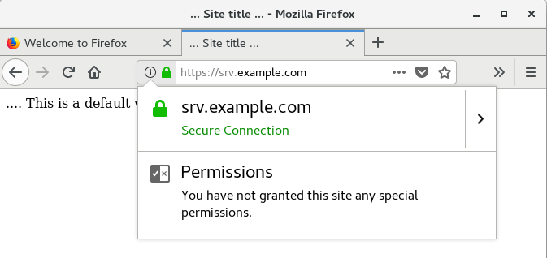
Теперь откройте страницу https://srv.example.com/private страница должна открыться автоматически без запроса логина и пароля.
Если страница не открылась и появился запрос логина и пароля, то проверьте что Firefox настроен так, как показано на скриншоте.
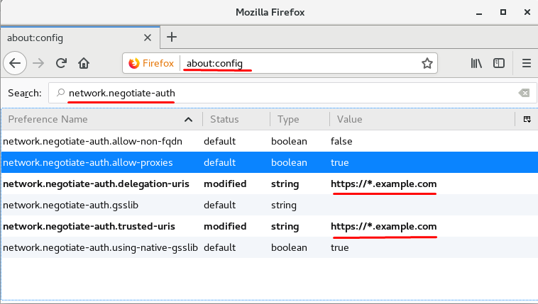
Проверить доступ с Kerberos аутентификацией можно также и через командную строку.
[ppv@cl1 ~]$ curl https://srv.example.com/private/
<!DOCTYPE HTML PUBLIC "-//IETF//DTD HTML 2.0//EN">
<html><head>
<title>401 Unauthorized</title>
</head><body>
<h1>Unauthorized</h1>
<p>This server could not verify that you
are authorized to access the document
requested. Either you supplied the wrong
credentials (e.g., bad password), or your
browser doesnt understand how to supply
the credentials required.</p>
</body></html>
[ppv@cl1 ~]$ curl --negotiate -u : https://srv.example.com/private/
<html>
<head><title> ... Site title ... </title></head>
<body>
.... This is an Internal private web site ...
.... If you see this, you had passed Kerberos Authentification ...
</body>
</html>
[ppv@cl1 ~]$
Пример настройки Kerberos аутентификации Apache c модулем MOD_AUTH_KERB можно взять здесь:
https://access.redhat.com/documentation/en-us/red_hat_jboss_web_server/3/html/http_connectors_and_load_balancing_guide/sect-mod_auth_kerb_example
Руководства по настройке веб приложений с аутентификацией Kerberos и Federated SSO совместно с SAML2 можно взять здесь:
https://www.freeipa.org/page/Web_App_Authentication/Example_setup
https://linuxmonk.ch/wordpress/index.php/2014/kerberized-http-auth-on-apache-mod_ssl-with-freeipa/
https://github.com/spacewalkproject/spacewalk/wiki/SpacewalkAndIPA
https://ipsilon-project.org/doc/example/gitlab.html
Создадим группы пользователей и хостов, добавим участников в группы.
Выполните все действия на: cl.example.com под пользователем vagrant.
Создадим группы пользователей с помощью командной строки
[vagrant@cl ~]$ kinit admin
Password for admin@EXAMPLE.COM:
[vagrant@cl ~]$ ipa group-add --desc="Admins of Web Servers group" web_servers_admins
--------------------------------
Added group "web_servers_admins"
--------------------------------
Group name: web_servers_admins
Description: Admins of Web Servers group
GID: 1896200013
[vagrant@ipa ~]$ ipa group-add-member web_servers_admins --users=ppv
Group name: web_servers_admins
Description: Admins of Web Servers group
GID: 1896200013
Member users: ppv
-------------------------
Number of members added 1
-------------------------
[vagrant@ipa ~]$ ipa group-add-member ws_helpdesk --users={lvas,ppv,ipetrov}
Group name: ws_helpdesk
Description: Workstation Helpdesk
GID: 1896200012
Member users: lvas, ppv, ipetrov
-------------------------
Number of members added 3
-------------------------
[vagrant@ipa ~]$ ipa group-remove-member ws_helpdesk --users=ipetrov
Group name: ws_helpdesk
Description: Workstation Helpdesk
GID: 1896200012
Member users: lvas, ppv
---------------------------
Number of members removed 1
---------------------------
[vagrant@ipa ~]$ ipa group-add --desc='group to add and delete' testgroup_to_delete
---------------------------------
Added group "testgroup_to_delete"
---------------------------------
Group name: testgroup_to_delete
Description: group to add and delete
GID: 1896200014
[root@srv vagrant]# ipa group-del testgroup_to_delete
-----------------------------------
Deleted group "testgroup_to_delete"
-----------------------------------
[vagrant@ipa ~]$ ipa group-find
----------------
7 groups matched
----------------
Group name: admins
Description: Account administrators group
GID: 1896200000
Group name: editors
Description: Limited admins who can edit other users
GID: 1896200002
Group name: ipausers
Description: Default group for all users
Group name: trust admins
Description: Trusts administrators group
Group name: web_servers_admins
Description: Admins of Web Servers group
GID: 1896200013
Group name: webservers
Description: users of Web Servers group
GID: 1896200009
Group name: ws_helpdesk
Description: Workstation Helpdesk
GID: 1896200012
----------------------------
Number of entries returned 7
----------------------------
[vagrant@ipa ~]$
Управление группами пользователей также можно выполнить в веб интерфейсе.
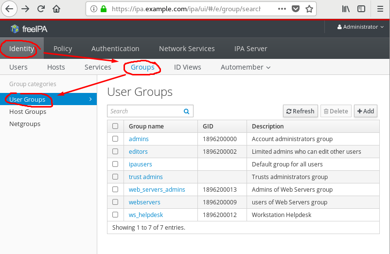
Создадим группу хостов restricted, добавим в неё компьютер srv .
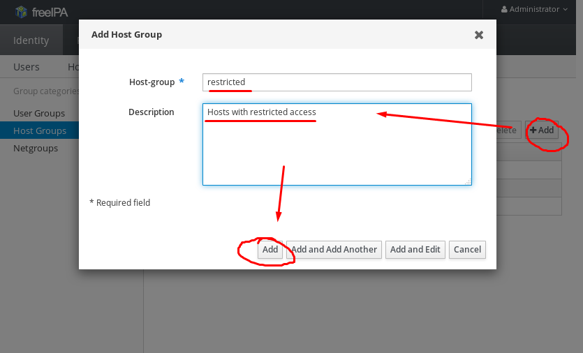
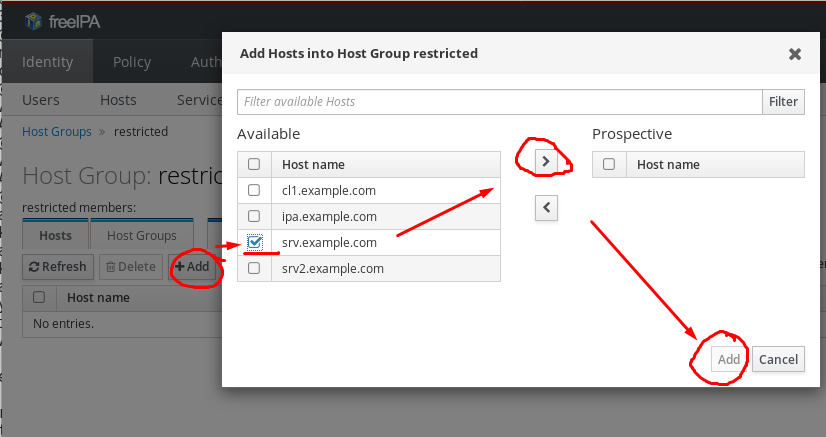
Теория https://www.freeipa.org/page/Active_Directory_trust_setup
В лабораторной среде настроен Active Directory домен domain.com с компьютерами
| Имя компьютера | Роль | Версия операционной системы |
|---|---|---|
| dc.domain.com | Контроллер домена | Windows Server 2016 |
| wincl.domain.com | Контроллер домена | Windows 10 |
На компьютерах заведены пользователи
| Имя пользователя | Пароль |
|---|---|
| Domain\Administrator | vagrant |
| Domain\vagrant | vagrant |
Выполните следующие действия на ipa.example.com, используя учетную запись vagrant и пароль vagrant.
[vagrant@ipa ~]$ yum install -y ipa-server-trust-ad samba-winbind-clients
...
Добавим перенаправление запросов dns зоны domain.com на контроллер домена. Проверим разрешение имен и доступ к ldap сервису DC.
[vagrant@ipa ~]$ kinit admin
Password for admin@EXAMPLE.COM:
[vagrant@ipa ~]$ ipa dnsforwardzone-add domain.com \
--forward-policy=only \
--forwarder=172.25.0.100 \
--skip-overlap-check
Server will check DNS forwarder(s).
This may take some time, please wait ...
Zone name: domain.com.
Active zone: TRUE
Zone forwarders: 172.25.0.100
Forward policy: only
[vagrant@ipa ~]$ dig +noall +answer SOA domain.com
domain.com. 3423 IN SOA dc.domain.com. hostmaster.domain.com. 53 900 600 86400 3600
[vagrant@ipa ~]$ dig +noall +answer SRV _ldap._tcp.domain.com
_ldap._tcp.domain.com. 600 IN SRV 0 100 389 dc.domain.com.
[vagrant@ipa ~]$ dig +noall +answer SRV dc.domain.com
[vagrant@ipa ~]$ dig +noall +answer A dc.domain.com
dc.domain.com. 3600 IN A 172.25.0.100
[vagrant@ipa ~]$ LDAPTLS_REQCERT=never ldapsearch -x -Z -D 'DOMAIN\administrator' \
-w 'vagrant' -h dc.domain.com \
-b "dc=domain,dc=com" \
-s sub "(objectClass=user)"
Выполните следующие действия на dc.example.com
C:\Users\administrator>dnscmd /zoneadd example.com /dsforwarder 172.25.0.10 /TimeOut 30
DNS server . version is 10.0.14393
Creating zone in built-in domain directory partition...
DNS Server . created zone example.com:
Command completed successfully.
C:\Users\administrator>nslookup -type=SRV _ldap._tcp.example.com
Server: localhost6.localdomain6
Address: ::1
Non-authoritative answer:
_ldap._tcp.example.com SRV service location:
priority = 0
weight = 100
port = 389
svr hostname = ipa.example.com
ipa.example.com internet address = 172.25.0.10
C:\Users\administrator>ping ipa.example.com
Pinging ipa.example.com [172.25.0.10] with 32 bytes of data:
Reply from 172.25.0.10: bytes=32 time<1ms TTL=64
Reply from 172.25.0.10: bytes=32 time<1ms TTL=64
...
C:\Users\administrator>
Выполним необходимые конфигурации на IPA сервере для создания доверительных отношений.
Выполните следующие действия на ipa.example.com.
[root@ipa vagrant]# ipa-adtrust-install --add-sids -U --netbios-name="EXAMPLE" --enable-compat -a "password"
The log file for this installation can be found in /var/log/ipaserver-install.log
==============================================================================
This program will setup components needed to establish trust to AD domains for
the IPA Server.
This includes:
* Configure Samba
* Add trust related objects to IPA LDAP server
To accept the default shown in brackets, press the Enter key.
Configuring cross-realm trusts for IPA server requires password for user 'admin'.
This user is a regular system account used for IPA server administration.
admin password:
IPA generated smb.conf detected.
Overwrite smb.conf? [no]: yes
Do you want to enable support for trusted domains in Schema Compatibility plugin?
This will allow clients older than SSSD 1.9 and non-Linux clients to work with trusted users.
Enable trusted domains support in slapi-nis? [no]:
The following operations may take some minutes to complete.
Please wait until the prompt is returned.
Configuring CIFS
[1/23]: validate server hostname
[2/23]: stopping smbd
[3/23]: creating samba domain object
Samba domain object already exists
[4/23]: creating samba config registry
[5/23]: writing samba config file
[6/23]: adding cifs Kerberos principal
[7/23]: adding cifs and host Kerberos principals to the adtrust agents group
[8/23]: check for cifs services defined on other replicas
[9/23]: adding cifs principal to S4U2Proxy targets
cifs principal already targeted, nothing to do.
[10/23]: adding admin(group) SIDs
Admin SID already set, nothing to do
Admin group SID already set, nothing to do
[11/23]: adding RID bases
RID bases already set, nothing to do
[12/23]: updating Kerberos config
'dns_lookup_kdc' already set to 'true', nothing to do.
[13/23]: activating CLDAP plugin
CLDAP plugin already configured, nothing to do
[14/23]: activating sidgen task
Sidgen task plugin already configured, nothing to do
[15/23]: configuring smbd to start on boot
[16/23]: adding special DNS service records
[17/23]: restarting Directory Server to take MS PAC and LDAP plugins changes into account
[18/23]: adding fallback group
Fallback group already set, nothing to do
[19/23]: adding Default Trust View
Default Trust View already exists.
[20/23]: setting SELinux booleans
[21/23]: starting CIFS services
[22/23]: adding SIDs to existing users and groups
This step may take considerable amount of time, please wait..
[23/23]: restarting smbd
Done configuring CIFS.
=============================================================================
Setup complete
You must make sure these network ports are open:
TCP Ports:
* 135: epmap
* 138: netbios-dgm
* 139: netbios-ssn
* 445: microsoft-ds
* 1024..1300: epmap listener range
* 3268: msft-gc
UDP Ports:
* 138: netbios-dgm
* 139: netbios-ssn
* 389: (C)LDAP
* 445: microsoft-ds
See the ipa-adtrust-install(1) man page for more details
=============================================================================
[root@ipa vagrant]#
Перед созданием доверительных отношений проверим синхронизацию времени и часовые пояса.
Выполните следующие действия на dc.example.com
C:\Users\administrator>tzutil /s "N. Central Asia Standard Time"
C:\Users\administrator>tzutil /g
N. Central Asia Standard Time
C:\Users\administrator>date /T
Thu 09/13/2018
C:\Users\administrator>time /T
03:02 PM
tzutil /l - Cписок всех часовых поясов
tzutil /? - Справка по команде tzutil
tzutil /l - Cписок всех часовых поясов
tzutil /? - Справка по команде tzutil
Выполните следующие действия на ipa.example.com.
[vagrant@ipa ~]# sudo timedatectl set-timezone Asis/Novosibirsk
[vagrant@ipa ~]$ timedatectl
Local time: Thu 2018-09-13 15:03:11 +07
Universal time: Thu 2018-09-13 08:03:11 UTC
RTC time: Thu 2018-09-13 08:03:11
Time zone: Etc/GMT-7 (+07, +0700)
NTP enabled: no
NTP synchronized: no
RTC in local TZ: no
DST active: n/a
[vagrant@ipa ~]$ sudo -s
[vagrant@ipa ~]$ sudo ntpdate -u dc.domain.com
13 Sep 15:10:55 ntpdate[5114]: adjust time server 172.25.0.100 offset -0.000767 sec
[root@ipa vagrant]# echo server dc.domain.com >> /etc/ntp.conf
[root@ipa vagrant]# systemctl restart ntpd
[root@ipa vagrant]# ntpstat
synchronised to local net at stratum 11
time correct to within 448 ms
polling server every 64 s
[root@ipa vagrant]# ntpd -q
[root@ipa vagrant]# ntpq -p
remote refid st t when poll reach delay offset jitter
==============================================================================
*LOCAL(0) .LOCL. 10 l 38 64 37 0.000 0.000 0.000
172.25.0.100 .LOCL. 1 u 31 64 37 0.432 10.817 15.472
Создадим доверительные отношения между IPA доменом и Active Directory
[root@ipa vagrant]# ipa trust-add --type=ad domain.com --admin Administrator --password --two-way=true
Active Directory domain administrator s password:
-------------------------------------------
Re-established trust to domain "domain.com"
-------------------------------------------
Realm name: domain.com
Domain NetBIOS name: DOMAIN
Domain Security Identifier: S-1-5-21-3619292856-10254698-3139940813
Trust direction: Two-way trust
Trust type: Active Directory domain
Trust status: Established and verified
[root@ipa vagrant]# ipa trustdomain-find DOMAIN.COM
Domain name: domain.com
Domain NetBIOS name: DOMAIN
Domain Security Identifier: S-1-5-21-3619292856-10254698-3139940813
Domain enabled: True
----------------------------
Number of entries returned 1
----------------------------
Добавим администраторов AD домена domain.com с во внешнюю группу ad_admins_external
[root@ipa vagrant]# ipa group-add --desc='Domain\Domain Admins external map' ad_admins_external --external
--------------------------------
Added group "ad_admins_external"
--------------------------------
Group name: ad_admins_external
Description: Domain\Domain Admins external map
Создадим POSIX группу для связи с внешней группой
[root@ipa vagrant]# ipa group-add --desc='Domain\Domain Admins map' ad_admins
-----------------------
Added group "ad_admins"
-----------------------
Group name: ad_admins
Description: Domain\Domain Admins map
GID: 1896200018
Добавим группу из AD домена во внешнюю группу IPA домена.
[root@ipa vagrant]# ipa group-add-member ad_admins_external --external 'DOMAIN\Domain Admins'
[member user]: < Enter >
[member group]: < Enter >
Group name: ad_admins_external
Description: Domain\Domain Admins external map
External member: S-1-5-21-3619292856-10254698-3139940813-512
-------------------------
Number of members added 1
-------------------------
Включим внешнюю группу в POSIX группу
[root@ipa vagrant]# ipa group-add-member ad_admins --group ad_admins_external
Group name: ad_admins
Description: Domain\Domain Admins map
GID: 1896200018
Member groups: ad_admins_external
-------------------------
Number of members added 1
-------------------------
Повторим операции для обычных пользователей домена
[root@ipa vagrant]# ipa group-add --desc='DOMAIN\Domain Users external map' ad_users_external --external
[root@ipa vagrant]# ipa group-add --desc='DOMAIN\Domain Users users' ad_users
[root@ipa vagrant]# ipa group-add-member ad_users_external --external 'DOMAIN\Domain Users'
[root@ipa vagrant]# ipa group-add-member ad_users --group ad_users_external
Проверим, с помощью утилиты wbinfo получим SID групп и пользователей.
[root@ipa vagrant]# wbinfo -n 'domain\administrator'
S-1-5-21-3619292856-10254698-3139940813-500 SID_USER (1)
[root@ipa vagrant]# wbinfo -n 'domain\Domain Admins'
S-1-5-21-3619292856-10254698-3139940813-512 SID_DOM_GROUP (2)
[root@ipa vagrant]# wbinfo -n 'domain\Domain Users'
S-1-5-21-3619292856-10254698-3139940813-513 SID_DOM_GROUP (2)
Если вы получили ошибку типа wbclookupname: wbc_err_domain_not_found и в журнальном файле /var/log/samba/log.wb-DOMAIN вы видите ошибку типа Failed to prepare SMB connection to DC: NT_STATUS_NETWORK_NAME_DELETED. дайте такие команды
[root@ipa vagrant]# net conf setparm global "client ipc signing" auto
[root@ipa vagrant]# systemctl restart winbind
Проверим доступ к общей папке IPA сервера пользователя AD домена.
Создадим папку общего доступа /smbshare в новом каталоге и сделаем её доступной для пользователей AD домена.
[root@ipa vagrant]# mkdir -p /opt/samba/smbshare/
[root@ipa vagrant]# semanage fcontext -a -t samba_share_t "/opt/samba/smbshare(/.*)?"
[root@ipa vagrant]# restorecon -R /opt/samba/
[root@ipa vagrant]# chmod a+w -R /opt/samba/smbshare
[root@ipa vagrant]# echo 'this is a test data in file' > /opt/samba/smbshare/readme.txt
[root@ipa vagrant]# GROUPSID=`wbinfo -n 'DOMAIN\Domain Users'|awk '{print$1}'`
[root@ipa vagrant]# net conf setparm 'share' 'comment' 'smbshare to test DOMAIN\'Domain Users' access'
[root@ipa vagrant]# net conf setparm 'share' 'read only' 'no'
[root@ipa vagrant]# net conf setparm 'share' 'valid users' "$GROUPSID"
[root@ipa vagrant]# net conf setparm 'share' 'path' '/opt/samba/smbshare'
[root@ipa vagrant]# smbcontrol smbd reload-config
Совместно используемый каталог теперь доступен для пользователей AD домена. Проверим доступ.
Зайдите на компьютер dc под пользователем AD домена, например DOMAIN\vagrant и откройте папку общего доступа \\ipa.example.com\share. Откройте файл readme.txt.
 Попробуйте создать любой файл или каталог в общей папке.
Попробуйте создать любой файл или каталог в общей папке.
Запустите терминал cmd.exe и дайте команду klist. Удостоверьтесь что был выдан Kerberos билет cifs/ipa.example.com
C:\Users\vagrant>klist
Current LogonId is 0:0x34268
Cached Tickets: (3)
#0> Client: vagrant @ DOMAIN.COM
Server: krbtgt/EXAMPLE.COM @ DOMAIN.COM
KerbTicket Encryption Type: AES-256-CTS-HMAC-SHA1-96
Ticket Flags 0x40a50000 -> forwardable renewable pre_authent ok_as_delegate name_canonicalize
Start Time: 9/14/2018 13:28:18 (local)
End Time: 9/14/2018 23:28:18 (local)
Renew Time: 9/21/2018 13:28:18 (local)
Session Key Type: AES-256-CTS-HMAC-SHA1-96
Cache Flags: 0
Kdc Called: DC
#1> Client: vagrant @ DOMAIN.COM
Server: krbtgt/DOMAIN.COM @ DOMAIN.COM
KerbTicket Encryption Type: AES-256-CTS-HMAC-SHA1-96
Ticket Flags 0x40e10000 -> forwardable renewable initial pre_authent name_canonicalize
Start Time: 9/14/2018 13:28:18 (local)
End Time: 9/14/2018 23:28:18 (local)
Renew Time: 9/21/2018 13:28:18 (local)
Session Key Type: RSADSI RC4-HMAC(NT)
Cache Flags: 0x1 -> PRIMARY
Kdc Called: DC
#2> Client: vagrant @ DOMAIN.COM
Server: cifs/ipa.example.com @ EXAMPLE.COM
KerbTicket Encryption Type: AES-256-CTS-HMAC-SHA1-96
Ticket Flags 0x40a90000 -> forwardable renewable pre_authent name_canonicalize 0x80000
Start Time: 9/14/2018 13:28:15 (local)
End Time: 9/14/2018 23:28:18 (local)
Renew Time: 9/21/2018 13:28:15 (local)
Session Key Type: AES-256-CTS-HMAC-SHA1-96
Cache Flags: 0
Kdc Called: ipa.example.com
C:\Users\vagrant>
Проверим беспарольный доступ по SSH к компьютеру IPA домена
Загрузим Putty и расположим его исполняемый файл прямо на рабочем столе текущего пользователя.
C:\Users\vagrant>powershell
Windows PowerShell
Copyright (C) 2016 Microsoft Corporation. All rights reserved.
PS C:\Users\vagrant> wget -UseBasicParsing https://the.earth.li/~sgtatham/putty/latest/w64/putty.exe `
-OutFile Desktop/Putty.exe
Запустим и настроим Putty так, как указано на скриншоте.
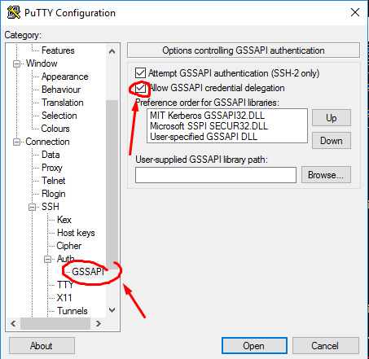
Укажите в качестве адреса OpenSSH сервера строку формата username@domain.tld@hostname.tld.
Для пользователя vagrant в домене domain.com при подключении к серверу ipa.example.com строка будет быглядеть так, как на скриншоте.
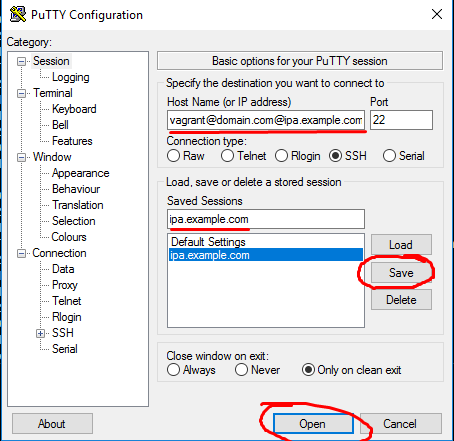
В окне "PuTTY Security Alert" нажмите Yes.
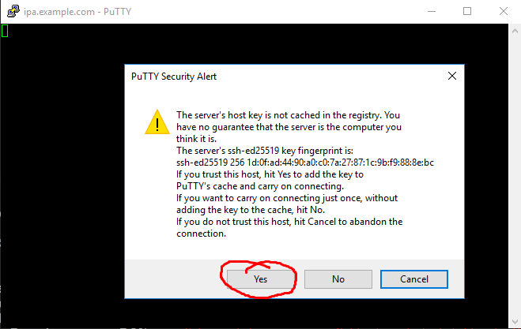
Подключение должно пройти без запроса логина и пароля и использованием Kerberosбилета, выданного пользователю при интерактивном входе.
Повторите предыдущие операции, зайдя интерактивно на компьютер участник домена wincl.domain.com под пользователем lvas@example.com. В качестве адреса сервера укажите lvas@example.com@ipa.example.com.
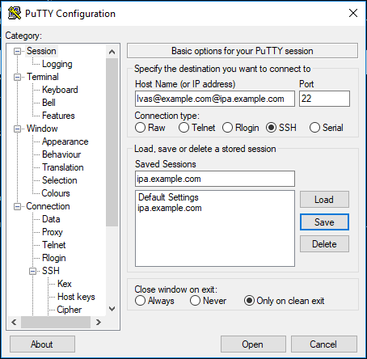
Подключение также должно пройти без запроса логина и пароля 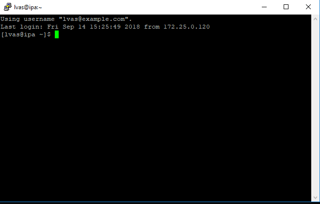
to do:
Host Based Access Control – HBAC
IdM Roles Management
IdM Multi Master Replication